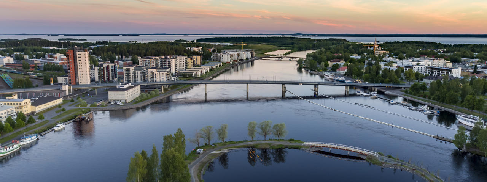
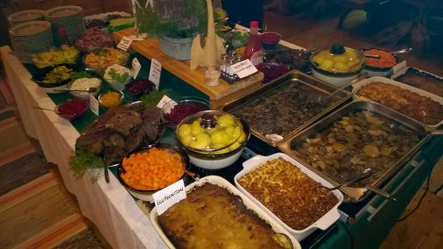

 Joensuu on Suomen kaupunki ja Pohjois-Karjalan maakuntakeskus, joka sijaitsee Saimaan Pyhäselän pohjoisrannalla Pielisjoen suulla Pohjois-Karjalan maakunnassa. Joensuu on asukasluvultaan Suomen 12. suurin kaupunki. Joensuun kaupungin alueella asuu noin 76 000 ihmistä. Joensuun naapurikunnat ovat Ilomantsi, Kontiolahti, Lieksa, Liperi, Rääkkylä ja Tohmajärvi. Lisäksi Joensuu rajoittuu idässä Venäjään. Joensuu kuuluu Joensuun seutukuntaan, johon kuuluvat nykyisin myös Ilomantsin, Juuan, Kontiolahden, Liperin ja Polvijärven kunnat sekä Outokummun kaupunki. Näistä Ilomantsi ei ole mukana Joensuun seudun seutuyhteistyössä. Euroopan metsäinstituutti sijaitsee kaupungissa.
 Syksyllä 2008 Joensuun kaupunki sai oman lippunsa, jonka on suunnitellut Leea Wasenius. Lippu perustuu kaupungin vaakunaan. Kaupungin nimikkoeläinlajeja ovat rupimanteri, kultasirkku, järvilohi ja orava. Nimikkokasvilajeja ovat puolestaan herkkutatti ja juurtokaisla.Joensuun pitäjäruoiksi nimettiin 1980-luvulla karjalaisen pitopöydän antimet: karjalanpiirakka, sultsina, vatruska, syrjikäs, suolakala, syltty, sienisalaatti, hapankaali, karjalanpaisti, perunat, lanttulaatikko, kiisseli tai marjamämmi sekä kotikalja.Joensuusta on hyvät liikenneyhteydet. Joensuun kautta kulkee valtatie 6. Rautatieasema ja linja-autoasema sijaitsevat vierekkäin puolen kilometrin päässä torilta. Lentokenttä on 11 kilometrin päässä Joensuun keskustasta.
Voit liikkua Joensuusta ja Joensuuhun omalla autolla tai julkisen liikenteen palveluilla. Esimerkiksi Joensuu–Helsinki–Joensuu-välin matkustaa yhteen suuntaan:
omalla autolla noin 5 tunnissa
omalla autolla noin 5 tunnissa
Maakunta: Pohjois-Karjalan maakunta Seutukunta: Joensuun seutukunta Perustettu: 1848 Kokonaispinta-ala: 2 750,96 km² Väkiluku: 76 453 Kaupunginjohtaja: Kari Karjalainen